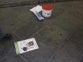
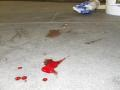
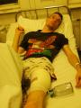

18.45: A Zöld Párt
aktivistái közül egy háromfõs csoport a Boráros téri
aluljáróban helyezett el plakátokat.
Egy huszonéves, fekete kapucnis pulóvert
viselõ férfi jelent meg mellettük,
aki érdeklõdött arról, hogy melyik szervezetnek
dolgoznak. Amikor a férfi fölismerte a képeken
Tomcatet, kést rántott és az aktivista
combjába szúrt egy legalább hat
centiméteres nyílt sebet okozva, mindössze néhány
milliméterrel elkerülve a fiatal
artériáját.
A férfi korábban még kérdéseket
is tett föl a srácoknak és csak akkor
támadt, amikor fölismerte Tomcatet, ezért a
támadás egyértelmûen politikai
jellegû.
19.00: Tomcat a
megérkezett a helyszínre. A mentõk késõbb érkeztek meg, pedig õk
szirénázhatnak is, és nem is gyalog járnak.
20.05: Két helyszínelõ két másik rendõrrel
most érkezett meg a helyszínre. Az
áldozatot a mentõk a Merényi Gusztáv Kórházba
szállították. Fényképes beszámolóval
késõbb jelentkezünk.
21.00: Tomcat a fiú mellett van a Merényi Gusztáv
Kórházban. A helyszínen készült fényképeket várhatóan még
az este folyamán publikáljuk. Az aktivista
támadásnál jelenlévõ társaival is megpróbáljuk fölvenni a
kapcsolatot.
21.20: Elértük
az esetnél jelenlévõ másik aktivistát, egy Jobbik-tag gyárlakónkat. Elmondása
szerint egy telefonfülke melletti puszta falfelületre
készültek fölragasztani a plakátot. A környéken több másik hirdetmény is
volt, így nem értették, miért lép hozzájuk a késõbbi támadó, és
követeli, hogy éppen oda ne ragasszanak. Az aktivisták
jelezték, hogy szerintük semmi sem tiltja, hogy a közterület azon
részére, kárt nem okozva ragasszanak, mire a férfi a megszúrt
fiatal felé ütött. Õ hátrált az ütések elõl, majd a földre
kerültek. Ekkorra ért oda a nekünk nyilatkozó szemtanú. Miután mondta, hogy
rendõrt hív, a támadó fölugrott, majd elfutott. A fiú a
földön maradt és jelezte, hogy megszúrták.
„Ugyanolyan hirtelenséggel, ahogy támadt,
felkelt és elfutott a közeli lépcsõ felé. Tamás ekkor már kelt fel és azt
mondta, megszúrta. Láttam, ahogy a vér csurog a combjából, és már tiszta vér
volt a nadrágja is!” 21.30: A nyomozók megjelentek a kórházban is. Bár a
sértett egyértelmûen politikai támadásnak nevezte az esetet, és a
helyszínelõk jelzéseibõl is erre lehetett következtetni, a nyomozók az
elõzetes kihallgatás után néhány perccel váratlanul visszatértek,
majd jelentették, hogy az ügyet nem politikai indíttatásúként
kezelik.
21.40: Az orvosok
befejezték a fiatal ellátását. A sérülés súlyosabb, mint gondoltuk: az lábában
lévõ izomszövet sérült, és a vágás olyan mély, hogy a szúrás akár
halálos is lehetett volna. A kórház traumatológiai osztályán maradt,
várhatóan napokig bent kell tartani.
21.50: A hatósági rekonstrukció szerint a férfi hasba
próbálta szúrni az aktivistát, tehát gyakorlatilag megpróbálta kibelezni. A
combtalálat így véletlennek tekinthetõ. A súlyos testi sértés bûntette
biztosan fennáll, de nem kizárt a gyilkossági kísérlet vádja
sem.
22.00: A megkéselt fiú üzent
mindazoknak, akiket fölháborított a támadás: kölcsön szeretne kérni egy
laptopot arra a néhány napra, amelyet a kórházban kénytelen tölteni
(22.40: köszönjük, Rhinoeli már fel is ajánlott egyet).
Ha bárki ezt vagy bármi mást (ételt-italt, olvasnivalót stb.) szeretne
neki vinni, meglátogathatja õt a Merényi Gusztáv Kórház I. emeletének
158-as szobájában. A Bombagyár szerkesztõsége és közössége jobbulást kíván
neki.
Kérjük a pártokat, hogy határolódjanak el a támadástól. A média
képviselõit pedig arra kérjük, tájékoztassák a nyilvánosságot a
támadásról, ahogyan ez nemcsak elvárható a sajtótól, de kötelessége
is.
22.20, Tomcat: Most értünk vissza a
kórházból, itt vannak a képek.
Number aránylag
jól van, de feküdnie kell, vákuumpalackot kötöttek a sebére, és remélik, nem lesz
komplikáció. A Zöld Párt hamarosan közleményt ad ki. A rendõrség máris ki akarta
jelenteni, hogy az ügynek „nem volt politikai indítéka”, ezt azonban a
sértett és a szemtanúk erõsen vitatják.
 A helyszín: a
földre nem sok vér folyt ki, de a srác gyakorlónadrágjának annyi lett, lucskosra
ázott.Sebesült
aktivistánk a kórházban. Vajon lesz-e akkora médiahiszti az ügy miatt, mint amikor 2006-ban
valaki gázpisztollyal lõtt képen egy SZDSZ-es
aktivistát?
Number beszámolója másnap a kórházból:
„Az eset egészen pontosan ugy történt hogy a srác elõrántotta a kést
majd hasba akart szurni, ekkor elestem a hátamra, tehát a késsel nem
tudott mit kezdeni, megprobált megrugdosni. Igen ám csak mindig ugy
forogtam hogy a lába a lábamnál legyen majd egy alkalmas pillanatban
kirugtam az egyik lábát és féltérdre esett.
Ekkor leesett neki hogyha nem csinál valamit gyorsan akkor lerántom
magam mellé és nem nagyon kel fel egy ideig ezért megint a késért nyult
és szurt, aztán elszaladt. Még felálltam és akkor vettem észre hogy
csorog valami a lábszáramon, ekkor már sejtettem hogy megszúrt.
Egyébként a lehetõ legszerencsésebb helyre szúrt, sem ideget, sem
artériát nem talált el, csak az izomba szúrt bele. Belém kötöttem egy
csövet hogy ne legyen belsõ vérzésem, de szerencsére ma reggelig fél
deci vér sincs még a palackban tehát már nem vérzik. Ma este még bent
tartanak, és holnap már hazaengednek. Szerencsére nem zsibbad a lábam,
nincs lázam, csak eléggé fáj, de ez a legkevesebb.
Köszönöm mindenkinek a biztató szavakat, jol esett.”